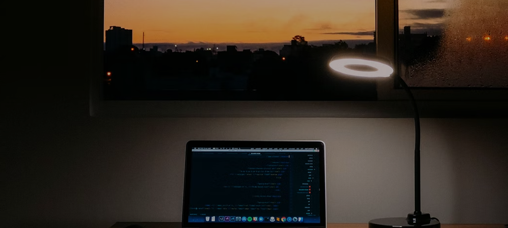

JULY 14, 2026
My new journey as a bootcamp student
After several months of learning in the Frontend Developer Career Path,
I've made the big jump over to the Bootcamp to get expert code reviews
of my Solo Projects projects and meet like-minded peers.

How I stay committed
to learning I like to think of myself as a lifelong
learner. I used to spend hours and hours learning, then try to create
simple projects using what I learned or work new techniques into
existing projects. While that was fun, I felt like it would be helpful
to share what I was learning and most things about my journey with the
world.
How I got started
I started simple and gradually grew my learning
journal site. I would take notes about what I was learning. After each
learning session, I'd use my notes to not only reflect on what I learned
but also write short summaries of what I learned using my own words.
That helped me grok what I was learning, and I realized that posting my
learning summaries was also helping others learn and stay motivated.

JULY 14, 2026
Blog one
I'm excited to start a new learning journey as a Scrimba Bootcamp
student! After several months of learning in the Frontend Developer
Career Path.

JULY 14, 2026
Blog one
I'm excited to start a new learning journey as a Scrimba Bootcamp
student! After several months of learning in the Frontend Developer
Career Path.
JULY 14, 2026
Blog one
I'm excited to start a new learning journey as a Scrimba Bootcamp
student! After several months of learning in the Frontend Developer
Career Path.